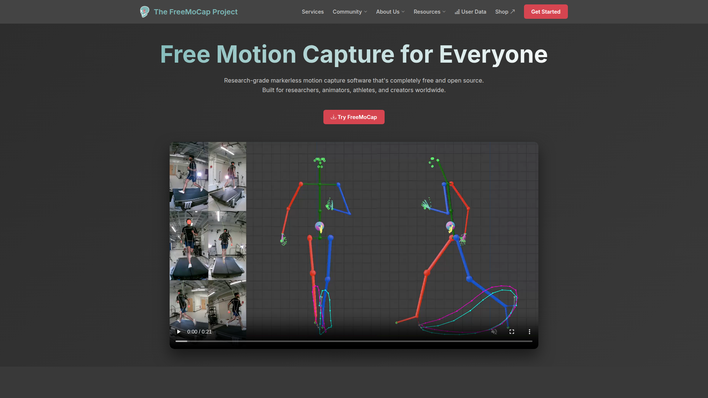

> 調研日期：2026-06-19
> GitHub：https://github.com/freemocap/freemocap
> 文件：https://docs.freemocap.org
▲ FreeMoCap + Blender Animation Tutorial
FreeMoCap（Free Motion Capture for Everyone 💀✨）是一套免費開源的無標記點動作捕捉系統，由神經科學家 Jonathan Matthis 博士發起。目標是讓任何人只需標準 webcam 就能進行研究等級的 3D 動作捕捉。
核心理念：「Mocap 不應該只屬於有錢人」— 用多台 webcam + Google MediaPipe AI 實現免費 3D 動捕。
解決的問題：

▲ FreeMoCap 官方首頁 — 免費開源動捕系統
| 功能 | 說明 |
|---|---|
| 多攝影機設定 | 3+ 台 USB webcam（建議），支援單鏡頭 2D |
| MediaPipe BlazePose | Google AI 偵測每幀 33 個身體關鍵點 |
| 手部追蹤 | MediaPipe 手部關鍵點 |
| 臉部追蹤 | MediaPipe 臉部關鍵點 |
| CharuCo 校準 | 多攝影機空間校準（棋盤格） |
| 3D 三角測量 | 多鏡頭交叉運算還原 3D 座標 |
| 後處理濾波 | 自動去噪、軌跡平滑 |
| GUI 介面 | 圖形化操作 |
| Blender 整合 | 自動生成 Blender 場景檔 |
| 不需 GPU | MediaPipe 在 CPU 即可運行 |
| 格式 | 支援 |
|---|---|
| CSV | ✅ 原生（3D 座標逐幀） |
| NumPy .npy | ✅ 原生（Python 分析用） |
| Blender .blend | ✅ 原生（自動生成場景） |
| BVH | ✅ 透過 Blender addon |
| FBX | ⚠️ 需手動從 Blender 匯出 |
| 項目 | 需求 |
|---|---|
| OS | Windows / macOS / Linux |
| Python | 3.10-3.12（建議 3.12） |
| 攝影機 | 3+ 台 USB webcam（3D）或 1 台（2D） |
| GPU | 不需要 |
| Blender | 需額外安裝（免費） |
| 校準板 | 需列印 CharuCo 棋盤格 |
pip install freemocap
pip install freemocap + 安裝 Blender| 項目 | 說明 |
|---|---|
| 價格 | 完全免費 |
| 授權 | AGPL-3.0 |
| 商業使用 | ⚠️ AGPL 要求開源衍生作品，商業閉源使用需洽談 |
| 硬體成本 | 3 台 webcam ~$50-$150 |
| 系統 | 精度 | 價格 |
|---|---|---|
| Vicon | ~0.1-0.5mm | $50,000+ |
| OptiTrack | ~1-2mm | $10,000+ |
| Move.AI Genesis | 宣稱接近光學 | Enterprise |
| FreeMoCap | ~1-3cm | 免費 |
| 面向 | 評估 |
|---|---|
| 格式 | BVH 可匯出（透過 Blender addon） |
| 互補性 | FreeMoCap = 本地離線影片 mocap；Kimodo = text-to-motion |
| 成本 | 兩者都免費/極低成本 |
| 量產化 | ❌ 都不太適合大規模自動化 |
| 適合場景 | 團隊內部自拍參考動作 → FreeMoCap 3D 重建 → 作為 Kimodo 的補充 |
| 品質 | FreeMoCap 的多鏡頭 3D 重建理論上比單鏡頭 AI 估算更準確（但需要更多設備） |
FreeMoCap 在工作流中的角色：
「零成本本地端 Mocap 基礎設施」
適合場景：
• 團隊內部動作參考拍攝（辦公室 3 台 webcam）
• 學術研究/原型驗證
• 預算為零時的動捕方案
• 需要完全離線/本地端處理的情況
不適合：
• 大規模量產（無批次/API）
• 需要高精度的正式製作
• 需要快速出結果（設置+校準耗時）
• 商業閉源產品（AGPL 限制）
在工作流中的位置：
「內部拍攝參考動作的免費工具」— 適合初期原型/概念驗證階段
正式量產後建議切換到 Viggle/Move.AI 等商業方案
| 項目 | 評分 (1-5) |
|---|---|
| 與我們目標的相關性 | ⭐⭐ |
| 技術成熟度 | ⭐⭐⭐ |
| 易用性 | ⭐⭐⭐ |
| 性價比 | ⭐⭐⭐⭐⭐ |
| Pipeline 整合潛力 | ⭐⭐ |
| 量產化適合度 | ⭐ |
推薦等級：🔵 低優先級備選 — 作為免費開源方案有其價值，適合「零預算內部動作拍攝」場景。但在量產工作流中，商業 AI 方案（Viggle $0.03/動作）的便利性和品質已經夠好，FreeMoCap 的設置成本反而更高。